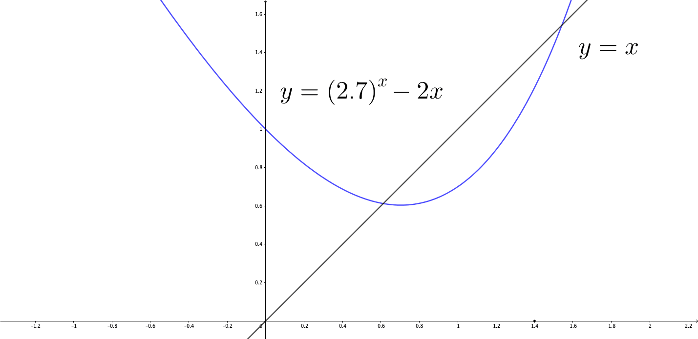

The formulation of set theory tells us that we can use any predicate to define a set in a more straightforward form. Meanwhile, Peano’s induction rule in section 1.4 illustrates a kind of machinery of induction rules to generalize a finite number of predicates to an infinite one. The key of this machinery is the set of natural numbers, \(\mathbb{N}\), as these numbers can automatically extend one predicate \(S(x)\) to the next one \(S(x+1)\) for any \(x\in\mathbb{N}\). Naturally, one could think about inferences using similar logic: For a collection of sets where each scenario is a particular kind of structured set, when one reasoning is done for a specific scene, its argument can be extended to the rest scenarios of the collection.
This kind of “automata” spirit roots deeply in people’s thoughts. In the age of Enlightenment, the articles of the automaton, such as clocks, had made significant epistemic and economic consequences. And this spirit is not just restricted to numbers and items. It can be understood as a piece of machinery that can “run” on specific objects and achieve the goals by allowing the objects to make actions of their own wills. For example, Bentham was intended to establish a code of laws that could automatically make men virtuous. The criminal law, in his view, was to guide the individual interests to coincide with the community ones (through legalizations, punishments, and penalties).
Founders of the United States drafted the Declaration of Independence in an axiomatic way. “We hold these truths to be self-evident” begins a list of explicit axioms, such as “All men are created equal” and “All men have the right to life, liberty, and the pursuit of happiness.”
In the 1940s and 50s, computer scientists and mathematicians attempted to describe the process of human thinking as the mechanical manipulation of symbols. They consider the process of rational thought to be axiomatizable, which is a reduction of the process of reasoning to a set of axioms. If these axioms, just like the components of a clock, could launch the process of thinking and let the process evolve into a wanted outcome, then the reasoning of human beings or even of any supremacy could be reproduced by merely symbolic operations of the axioms.
An axiom is a statement that is not proved to be true but supposed to be so. The axioms create a general process of knowledge-base construction. Just like logical inferences, people investigate some particular domain, learn what concepts are essential in that domain, and develop a set of formal rules of the objects and relations in the field. Then the set of rules can infer further objects and relations, like making different predicates \(S(x)\) go from \(S(x+1)\) to \(S(x+2)\), \(S(x+3)\) and so on. The axioms tell us what the variable \(x\) and the predicate \(S(\cdot)\) could be. We accept the sentences of axioms without proof. Then basing on these axioms, we infer other sentences via purely deductive reasoning. The sentences with which the various deductive chains come to an end are called the theorems, and the deductive chains are the proofs. An axiomatic system, which some people would have called “ideology,” uses a few intuitive notions and the initial postulates to deliver a large number of theorems through deductive chains that appear to be reasonably clear and rigorous.
Natural numbers play the absolute (internal) truth and the pre-eminent role in this “automata” spirit. Although the natural numbers are among the simplest mathematical objects, many of the problems, including both mathematical ones and those embodied in the mathematical forms, tend to use techniques from the theories of natural numbers or to study some properties that relate to the basic features of \(\mathbb{N}\).16 Carl Friedrich Gauss said “Mathematics is the queen of the sciences and number theory is the queen of mathematics.”
Before any attempt to jump further, we need to ask one question. What are the natural numbers? They count things. You may agree with this semantic answer. But what is counting? Counting is a process that when someone adds \(1\) to any existing natural number \(x\), the result becomes \(x+1\). This description, however, is imprecise by logic. The addition is an operation of natural numbers. Defining the natural number system by its operation evades the original question. Surprisingly, the question is not as simple as it looks at first glance. If we need a new rigorous concept, we need an architecture of building this concept. Such architecture defines ways to construct new concepts from already existing ones. This architecture in set theory is called axioms. One states several axioms, such as some propositions that are supposed to be true for some sets, then on this axiomatic basis, the new concept emerges. Peano axioms present the concept of natural numbers.
Axiom 1 - Initial value rule: There is one special object \(0\) and \(0\in\mathbb{N}\).
Axiom 2 to 5 - Equality (\(=\)):
Axiom 1 to 5 specify the variable \(x\), and axiom 6 to 9 specify the predicate \(S(\cdot)\). Initial value \(0\) tells the set has a lower bound. Reflexivity, symmetry, and transitivity are the same as those in the equivalence relation. Closeness says that when the relation of two objects exists, as long as one object belongs to the set, the other one also belongs to the same set. It is similar to the connexity that says any two objects in a set must have a relation. With these five axioms, the set of variable \(x\) has a total equivalence relation. The predicate \(S(\cdot)\) of \(x\) defines the unique successor for each \(x\) and defines that none of them has zero as their successor. The use of the successor function is to have a total order relation for all numbers in \(\mathbb{N}\) such that \(x<S(x)\) is always true for any \(x\in\mathbb{N}\).17 The necessity of the successor function is because that addition (\(+\)) has not yet been defined in this system. So we cannot use the notation \(S(x)=x+1\) as \(+\) is not defined in the axioms. We only can say that the next number of the natural number \(x\) is \(S(x)\), and \(S(x)\) is a natural number.
The axioms of the successor function \(S(\cdot)\) is not true for some other number systems. For instance, Boolean algebra (section 1.2) only contains numbers \(0\) and \(1\). Such a number system is called a binary number system. The number \(2\) in such a system is represented by \(10\) in the binary format. The numbers \(1\) to \(5\) in this system are \[1=1,\,2=10,\,3=11,\,4=100,\,5=101.\] The successor rule for the binary number system is as follows. After a digit reaches \(1\), a successor resets it to \(0\) and causes an increment of the next digit to the left. For example, for natural number \(3\), the binary representation \(11\) has all positions filled by \(1\), then the next number will set \(11\) to \(00\) and will make one digit increment \(100\). So the natural number \(4\) is presented by \(100\) in this system. The rule \(S(1)=10\) violates the axioms 6-9 for \(\mathbb{N}\). The successor function \(S\) defined by axiom 6 to 9 only works for numbers in \(\mathbb{N}\).
The above nine axioms define the natural numbers. The whole universe of numbers, such as binary numbers, rational numbers, real numbers, and complex numbers, etc., all start with the natural numbers. In other words, these nine axioms are the primitive of all other numbers. The natural number system has many further implications. With the axioms of \(\mathbb{N}\), we can build some structures of \(\mathbb{N}\). The addition in \(\mathbb{N}\) is a vital structure. It plays a fundamental role in the modern computational methods of which the soul is about recursion.
The addition of natural numbers is a function that maps from \(\mathbb{N}\times\mathbb{N}\) to \(\mathbb{N}\). The definition follows a recursion rule of the successor function \(S(\cdot)\) in Peano’s axiom 6 to 9. For any \(x,y\in\mathbb{N}\), the recursion rule of the successor function is the following:\[x+S(y)=S(x+y),\:\mbox{ for }x,y\in\mathbb{N}.\] Firstly, as \(S(y)\neq0\) for any \(y\in\mathbb{N}\), we need a rule of the addition for zero, that is \(x+0=x\) for any \(x\in\mathbb{N}\). Secondly, if we let \(S(y)=3\), then the successor function tells that \(y=2\). By using the recursion rule repetitively, we have \[\begin{align*} x+3 &=x+S(2)=S(x+2)=S(x+S(1))\\ &=S(S(x+1))=S(S(S(x))). \end{align*}\] The first equality expresses \(3\) by its successor function \(S(2)\). The second equality uses the recursion rule for \(x+S(2)\). The third equality replaces \(2\) with its successor function’s expression \(S(1)\). The fourth equality uses the recursion rule for \(x+S(1)\). The last equality expresses \(x+1\) by \(S(x)\).
The final expression \(S(S(S(x)))\) only contains the successor function \(S(\cdot)\) from the axioms. So the recursion rule tells that a 3-times recursive expression \(S(S(S(x)))\) can be written as \(x+3\) with the addition function. That is, when \(x\) is added by \(3\), the successor function \(S(\cdot)\) is used three times recursively for the variable \(x\).18 The expression \(S(S(S(\cdot)))\) is a composition of the same function \(S\). It is equivalent to \(S\circ S\circ S\). Since the recursion rule works any two natural numbers, the addition defined by this rule always works for any two natural numbers.
Recursion is about presenting things in terms of themselves. A recursion is represented by a function that is defined by the same rule but for different values of its variables. The previous recursive expression \(S(S(S(x)))\) in section 3.2 may not look better than \(x+3\). But the point is that no matter how complicated the addition is, we can finish the computation by only using the simple successor function \(S(x)=x+1\). For a human being, \(x+3\) is preferable. But for a computer, it is the other way around because an algorithm is often designed to break a problem into smaller subproblems so that the algorithm can run a process to solve the subproblems recursively.
When a recursion depends on the function with its domain in \(\mathbb{N}\), this function is called sequence. Because the set in \(\mathbb{N}\) can be counted, any function \(g(\cdot)\) whose domain is in \(\mathbb{N}\) can be defined as an infinite-length sequence \((x_{1},x_{2},\dots)\) where \(x_{i}=g(i)\) for \(i\in\mathbb{N}\). The bracket emphasizes that the order of \(x_{1},x_{2},\dots\) matters. That is, \(x_{i}=g(i)\) must be evaluated after \(x_{i-1}=g(i-1)\). If the domain of \(g(\cdot)\) is a subset of \(\mathbb{N}\) containing finite \(N\) numbers, then the sequence \((x_{1},x_{2},\dots,x_{N})\) is a finite-length sequence.
The intuition of recursively solving a big problem is to immediately understand whether a set or a property is effectively computable.19 If a function \(f\) is said to be effectively computable, then there is some algorithm for calculating its value for each of its arguments. In practice, we can specify a series of instructions following which we can, in principle, determine mechanically and effectively the output \(f(x)\) for each input \(x\). When it is computable, we expect that there is a mechanical procedure delivering its outputs or answers in a finite amount of time, and this procedure can generate all the elements of the set or the relevant property and can reveal the dependence among the elements. Such a procedure is known as the recursive or iterative procedure.20 In computer science, an iterative process often refers to a specific procedure of searching for a solution: a rule (set of rules) is applied over input data many times, each time producing a better approximation to the solution.
Suppose a function \(f\) is computable. Then we expect that a sequence \((x_{i})_{i\in\mathbb{N}}\) can reveal the property of this function, and one recursion can generate such a sequence. Take the addition of natural numbers as a simple example. If we denote \(0=x_{0}\), \(0+1=S(x_{0})=x_{1}\), \(S(S(x_{0}))=x_{2}\), and so on, then we will have an ordered sequence \[(x_{0},x_{1},x_{2},x_{3}\dots)=(x_{i})_{i\in\mathbb{N}}.\] The addition as a function of natural numbers should be embodied by some relation of the elements in this sequence. As we know, the objects in this sequence follow the recursive relation \(x_{k}=S(x_{k-1})\) for an arbitrary value \(k\in\mathbb{N}\). The addition \(k+q\) can be expressed as \[\underset{k+q-\mbox{composition of }S}{\underbrace{S(S(\cdots(S(x_{0}))\cdots))}} =\underset{q-\mbox{composition of }S}{\underbrace{S(S(\cdots(S(x_{k}))\cdots))}}=x_{k+q}\in(x_{i})_{i\in\mathbb{N}}.\] Therefore, any addition function \(f(k,q)=k+q\) for \(k,q\in\mathbb{N}\) can be recursively represented by \(x_{k+q}=f(x_{k},x_{q})\) with \(x_{0}=0\). By the relation \(x_{k+q}=f(x_{k},x_{q})\), the objects from the sequence \((x_{i})_{i\in\mathbb{N}}\) now represent both the inputs \(x_{k}\), \(x_{q}\) and the output \(x_{k+q}\) of the addition. In other words, the sequence \((x_{i})_{i\in\mathbb{N}}\) characterizes the addition function \(f(k,q)=k+q\) of natural numbers by the recursive relation \(x_{k+q}=f(x_{k},x_{q})\).
The recursive form \(x_{k+q}=f(x_{k},x_{q})\) comes with two inputs. For the moment, it is better to consider a more straightforward single-variable recursion case such as \(x_{k+1}=f(x_{k})\). The following example gives a theorem for understanding an arbitrary single-variable self-mapping function \(f(\cdot)\) by the sequence generated in the recursive form \(x_{k+1}=f(x_{k})\).21 Self-mapping means the domain and the co-domain of the function are the same, namely \(f:\mathcal{X}\mapsto\mathcal{X}\).
Proof
The theorem gives a theoretical result about defining a function \(f(\cdot)\) by a recursive sequence \((x_{i})_{i\in\mathbb{N}}\). This theorem becomes useful whenever we need to define or study the properties of a function by recursion.
Figure 3.1: Numerical Solution
Here is one application. Suppose we are interested in solving an equation \[(2.7)^{x}-3x=0.\] The problem is equivalent to the problem of finding \(x=f(x)\) where \(f(x)=(2.7)^{x}-2x\). The solution \(x^{*}\) satisfying \(x^{*}=f(x^{*})\) will also meet \((2.7)^{x^{*}}-3x^{*}=0\), and \(x^{*}\) is unknown to us. We can only send a number \(x\) to the computer, and the machine will report the value of the function \(f(x)\). We will search for this root by recursion \(x_{i+1}=f(x_{i})\). Let’s start with an initial guess \(x_{0}=1.4\); then, we have \(f(1.4)=x_{1}\), which is about \(1.22\). Substitute \(x_{1}\) into \(f\), then we have \(f(x_{1})=x_{2}\), which is about \(0.92\). Similarly, we will see that \(f(x_{2})\) is about \(0.65\), and \(f(x_{3})\) is about \(0.61\), and so on. For \(i>4\), all \((x_{i})_{i>4}\) stay close to the value \(0.612\), which is also the (\(3\)-digit depth numerical) solution of the problem.22 Note that there is no exact solution to this problem. We can only attain a numerical solution. By the desired accuracy at \(10^{-6}\), the answer of \(x^{*}\) is \(0.6124443\), and the function \((2.7)^{0.6124443}-3\times0.6124443\) has the output \(-6.713519\times10^{-6}\).
Figure 3.1 illustrates the recursive procedure. The blue arrow sets \(y=f(x_{i})\), and the green arrow sets \(x_{i+1}=y\), and so on.
Roughly speaking, the reason for finding out the root is that we have constructed a monotone decreasing sequence so that in each iteration \(x_{i+1}=f(x_{i})\), the value of \(|f(x_{i})-x_{i}|\) gets closer to zero than the previous one. Eventually, the sequence will “reach” the desired point \(x^{*}=f(x^{*})\). The construction of such a monotone decreasing sequence is sensitive to the initial value \(x_{0}\). The form \(x_{i+1}=f(x_{i})\) is called the fixed point iteration which we will discuss in the chapter [?].
A set is a collection of mathematical objects about which we are reasoning. But what if someone defines a predicate such that no statement can consistently match the predicate. For instance, the statement:
This sentence is a lie.
Is that sentence a lie or not? We cannot judge whether the statement is true or false since the lie refers to the sentence itself. This predicate creates a self-referential set such as \(\mathcal{X}=\{x|\, x\in\mathcal{X}\}\). Self-reference often causes a paradox. Because the self-reference provides no further information besides itself, the central concepts involved in it likely has an indication of a flaw or a deficiency in our understanding.
In the case of the semantic paradoxes, the deficiency refers to the fundamental semantic concepts such as truth and definability.23 One of the most ancient versions of semantic paradox appears in St Paul’s Epistle to Titus. St Paul blamed a Cretan prophet: “One of themselves, even a prophet of their own, said, The Cretans are always liars … This witness is true.”
In the case of the set-theoretic paradoxes, the deficiency in our understanding refers to the concept of a set. Consider the following one given by Russell:
If \(\mathcal{X}=\{x|\, x\notin\mathcal{X}\}\), then \(x\in\mathcal{X}\) implies \(x\notin\mathcal{X}\).
If the concept is fully understood, we should be able to deal with it without being led to a contradiction. The concept \(x\notin\mathcal{X}\) contradicts with the definition of \(\mathcal{X}\). The set \(\mathcal{X}\) in Russell’s paradox refers to a set that doesn’t contain itself. Thus the paradox is caused by the self-referential predicate.
In practice, self-reference is hard to avoid. Especially when we code a recursion, the structure of the code is self-referential, and it would look like
which actually means \(x_{i+1}=f(x_{i})\). Moreover, it is often challenging to notice a paradox. It usually starts with intuitively plausible premises and advances via seemingly fair inferences, but finally, reaches some absurd or blatantly counter-intuitive conclusion of the argument.
We can consider a paradox as a set of jointly inconsistent sentences. To avoid the paradox, we should make sure that the self-reference will not evoke inconsistency. For this point, we need to refine the set theory in order to escape the trap of inconsistency. The following list of axioms is a variant of the collection proposed by Zermelo and Fraenkel (abbreviation: ZFC, C for “choice”). Axioms of ZFC are to produce a consistent form of set theory.
Axiom of specification: For a set \(\mathcal{A}\), if \(S(x)\) is a predicate for all objects in \(\mathcal{A}\), then there is a set \(\mathcal{X}=\{x\in\mathcal{A}\,|\, S(x)\}\).
Axiom of power sets: For a set \(\mathcal{X}\), the collection of all subset of \(\mathcal{X}\) is called the power set of \(\mathcal{X}\) such that \(2^{\mathcal{X}}=\left\{ \mathcal{A}|\,\mathcal{A}\subset\mathcal{X}\right\}\).
Axiom of infinity: For a set \(\mathcal{A}\), the successor of \(\mathcal{A}\) is a set \(\mathcal{A}^{+}\) that contains \(\mathcal{A}\). A set \(\mathcal{X}\) with \(\textrm{Ø}\in\mathcal{X}\) exists such that if any set \(\mathcal{A}\) is an object in \(\mathcal{X}\), then any set \(\mathcal{A}^{+}\) is also an object in \(\mathcal{X}\).
Axiom of choice: For a non-empty set \(\mathcal{X}\), the power set of \(\mathcal{X}\) has a choice function. The choice function \(f(\cdot)\) is defined on \(2^{\mathcal{X}}\). For any non-empty set \(\mathcal{A}\) in \(2^{\mathcal{X}}\), \(f(\mathcal{A})\) is an object in \(\mathcal{A}\), namely \(f(\mathcal{A})\in\mathcal{A}\).
These axioms preserve as much of the elegance and power of set theory as possible while eliminating the inconsistencies.
Axiom of specification says that we can create a set of objects that share a particular property by a different set. The axiom suggests to start with a set \(\mathcal{X}\) and then construct another set \(\mathcal{A}\) by some desired property selected from \(\mathcal{X}\). The axiom resolves Russell’s paradox. With the axiom, the predicate \(x\notin\mathcal{X}\) only refers to the set \(\mathcal{A}\), and the new set is \(\{x\in\mathcal{A}\,|\, x\notin\mathcal{X}\}\). The definition \(\{x\in\mathcal{X}\,|\, x\notin\mathcal{X}\}\) is not allowed by the axiom because the predicate \(x\notin\mathcal{X}\) never works for any object in \(\mathcal{X}\). Then \(x\in\mathcal{X}\) only implies \(x\notin\mathcal{A}\) rather than a contradiction \(x\notin\mathcal{X}\).
Axiom of power sets is to construct a set by itself. So far, we only consider the objects in a set. The collection of all subset makes the subsets as objects in the power set. For a finite set \(\mathcal{X}=\{x_{0},x_{1}\}\), its power set is \[2^{\mathcal{X}}=\{\textrm{Ø},\{x_{1}\},\{x_{2}\},\{x_{1},x_{2}\}\}.\] The set \(\mathcal{X}=\{x_{1},x_{2}\}\) becomes an object in the power set \(2^{\mathcal{X}}\). For the infinite set \(\mathbb{N}\), the power set creates a larger set \(2^{\mathbb{N}}\) where \(\mathbb{N}\in2^{\mathbb{N}}\). This creation introduces a new concept, an uncountable set. We know that natural numbers are infinite, but they are countable. A set \(\mathcal{X}\) is called countable if there exists an injective (one to one) function mapping to the set of natural numbers, namely \(f:\mathcal{X}\mapsto\mathbb{N}\). But since the power set \(2^{\mathbb{N}}\) is larger than \(\mathbb{N}\), there is no one to one function mapping from \(2^{\mathbb{N}}\) to \(\mathbb{N}\). Then the set \(2^{\mathbb{N}}\) is not countable, or say uncountable. The natural numbers are countably infinite, but the real numbers are uncountably infinite.24 A rigorous argument of the difference between countability and uncountability will be given in section 5.2. We will prove that it is impossible to match every real number to a corresponding natural number.
Axiom of infinity tells that there is a way to create infinite sets. Just like the successor rules for natural numbers, the axiom creates a set \(\mathcal{X}\) that can allow the infinite successor sets \[\mathcal{A}\subset\mathcal{A}^{+}\subset\{\mathcal{A}^{+}\}^{+}\subset\cdots\] to be included in \(\mathcal{X}\). In the ZFC framework, all infinite sets must either be created in this way or derived from another infinite set created in this way. For example, \(\mathbb{N}\) can be defined as the set from \(\{0\}\subset\{0,1\}\subset\cdots\).
The last axiom, the axiom of choice, is still a subject of debate among mathematicians. It says that there exists a consistent but arbitrary mechanism for selecting things from a set, even when the set is infinitely uncountably large. The mechanism is the choice function that can choose one object from a set of indistinguishable objects. It doesn’t matter what the choice is. It just matters that there is a function that can choose. The axiom gives an “existence” to a function that can choose.25 Russell commented on the axiom. “To choose one sock from each of infinitely many pairs of socks (assumed to have no distinguishing features) requires the axiom of choice, but for shoes the axiom is not needed.” Infinitely many shoes are countable because the left shoe and the right one are distinct. Infinitely many pairs of socks are uncountable because pairing two infinite countable sets will lead to an uncountable set. See section 5.2. So for socks, we need the axiom to ensure the existence of a choice function.
Axiom of choice cannot be disproved or proved by the standard axioms of set theory because the axiom itself is part of the axiomatic system. Provided that it has served as a cornerstone in formalizing several significant results, we will only consider the consequences of this axiom rather than question the validity of this axiom. One of these results is about the “real world” choice function in economics and related subjects, the so-called utility maximization choice.
* The content in this section contains the result of my research. That is to say, it has not yet been considered or approved by the academics. Read at your own risks.
Axiom of choice has a few equivalent versions. One of them is (relatively) convenient to use.
Zorn’s lemma gives the existence of a maximal element in a partially ordered set \(\mathcal{X}\). We can compare this result with the one about preference satisfaction in economics. Without loss generality, the following sentence is a simplified definition of the existences of preference satisfaction (greatest element in the preference) and equilibrium consumption given in Chapter 4.9 in Debreu (1959):
I will deduce that the above definition is equivalent to Zorn’s lemma.
The set \(\mathcal{X}\) is the consumption set of this consumer. The consumer has a pre-order preference over his consumption options. So \(\mathcal{X}\) is a pre-ordered set.
The constraint \(p \cdot x\leq w\) is the wealth constraint of this consumer. Because the expenditure \(p \cdot x\), price “mutiples” the consumption, should be less than his wealth. Notice that price and wealth are real numbers in this setting, so \(p\cdot x\leq w\) gives the total order structure to the set \(\mathcal{A}\).27 Real numbers are totally ordered, see Sec[?].
Moreover, there is an implication of “monetizing” the consumption set \(\mathcal{X}\). Since the consumption \(x\) is implicitly assumed to be computable under the price \(p\), any consumption \(x\) has to satisfy the anti-symmetry condition. That is, if \(x_{1}\leq x_{2}\) and \(x_{2}\leq x_{1}\), then the expenditures result in \(p\cdot x_{1}\leq p\cdot x_{2}\) and \(p\cdot x_{2}\leq p\cdot x_{1}\), which implies \(p\cdot x_{1}=p\cdot x_{2}\), namely \(x_{1}=x_{2}\). The anti-symmetry property is implicitly added when the price-wealth pair \((p,w)\) parameterizes \(\mathcal{X}\). By definition, a pre-order with anti-symmetry property becomes a partial order. In other words, when the consumption set \(\mathcal{X}\) is immersed in the monetary world, the set \(\mathcal{X}\) becomes a partially ordered set.
Thus, \(\mathcal{X}\) is a partially ordered set, \(\mathcal{A}\subset\mathcal{X}\) is a totally ordered subset, and the upper bound is \(p\cdot x=w\). The greatest element in \(\mathcal{X}\) is simply the maximal element stated in Zorn’s lemma. So the deduction finishes.28 Strictly speaking, the price and wealth should be written as real-valued vectors. Since the vector has not been introduced yet, I don’t emphasize this algebriac structure. The result will be re-stated in the vector setting later. For those who know the vector: The mutiplications should be evaluated as inner product. Also, for comparing two consumption plans, I would have used the appropriate symbol \(\sim\) for the indifferent relation rather than \(=\).
The greatest element, say \(x^{*}\), is selected by the choice function.29 The selection mechanism of the choice function depends on price and wealth, so it is often written as \(x^{*}(p,w)\). The mechanism will become clear once we see the optimization in section [?]. With \(x^{*}\) and the utility function \(u(\cdot)\) that preserves the partial order of \(\mathcal{A}\), the consumer is said to choose a maximal utility \(u(x^*)\) on \(\mathcal{A}\).
Since Zorn’s lemma is equivalent to axiom of choice, the result of the lemma, namely the existence of a maximal element, also cannot be disproved in the current axiomatic framework. It also implies that the existence of a possibly satisfied preference or a greatest element in a preodering preference cannot be disproved. However, if the connection between Zorn’s lemma and the maximal element in the preference was broken, then both the existence of preference satisfaction \(x^{*}\) and the maximal utility \(u(x^*)\) would become doubtful. But how can such a connection be broken? Here is one possibility. Suppose that \(p\) and \(w\) are not in the ordered set, then the “monetized” \(\mathcal{X}\) is not necessarily partially ordered, and the result of the maximal element from Zorn’s lemma is not applicable. If price and wealth are not in the ordered set, then the existences of preference satisfaction, equilibrium consumption and utility maximization are all open to question.
Page built: 2020-01-29